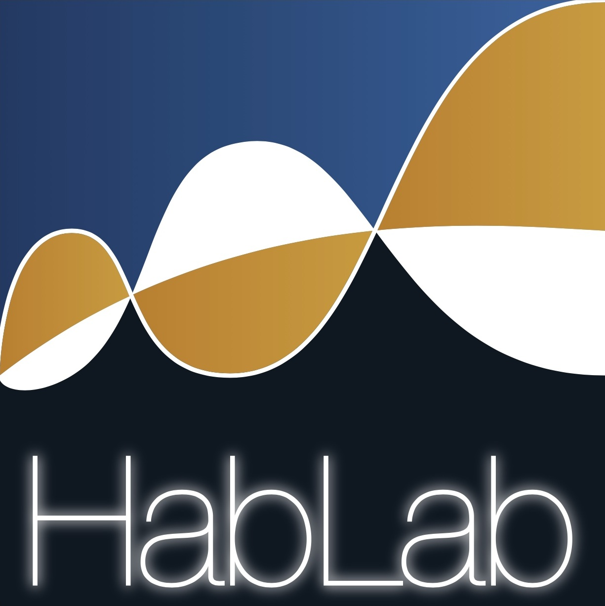

Task created by (Assaneo et al., 2019)
Adapted to an online setting by Carlos Magallanes-Aranda, cmagallanx@gmail.com

The Speech-to-Speech Synchronization Test (SSS-Test) is a test that can distinguish individuals in two groups.
Low or Highs synchronizers. If you want to test your synchronization abilities and see in which group you belong, complete the following instructions.
For the test to work correctly it's important to be in a silent enviroment, have a good microphone as well as good headphones.
Disclaimer: Your data is deleted after analysis and is will not be used in any other way.
It's important that your microphone is functional. Test it, and if it works okay, move to the next step. (~5 seconds)
Idle
Next up we have a training phase. It's very important for you to listen to the next audio. (~10 seconds)
Now you try whisper the /tah/ to the same rhythm you heard it. (~10 seconds)
Idle
Now you will hear a strange train of syllables, whisper /tah/ and try to synchronize your speech to the stimulus. (~60 seconds)
Idle
The synchronization value (PLV) ranges from 0 to 1.
Normally, low synchronizers are below 0.5 while high synchronizers are above 0.6
Results Pending
The speech-to-speech synchronization test (SSS-test) is a brief behavioral protocol in which participants continuously whisper the syllable /tha/ while listening to a rhythmic sequence of syllables.
This simple paradigm can identify two distinct subgroups within the general population, low/high synchronizers. Group classification has been shown in different lenguages, originally tested in English speakers
(Assaneo et al., 2019), Mexican Spanish (Gómez et al., 2024),
German (Rimmele et al., 2022), Norwegian
(Sjuls et al., 2023).
Importantly, group classification has been shown to correlate with differences at the neural level (anatomical and functional) (Assaneo et al., 2019),
as well as in cognitive level (Lizcano-Cortés et al., 2025).
A detailed protocol for the test can be found in (Lizcano-Cortés et al., 2022).
This task was created by Carlos Magallanes-Aranda, PHD Student of the HABLAB.
For any inquiry or comment you may contact mail to cmagallanx@gmail.com.
Feedback is welcomed.